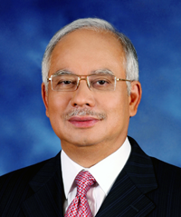
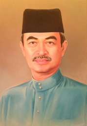
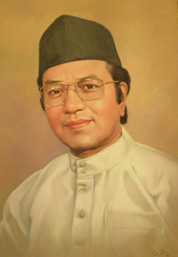
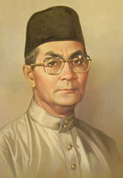
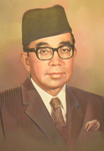
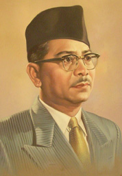
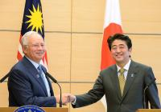
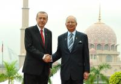

Biografi

Dato' Sri Mohd Najib was appointed as Malaysia's sixth Prime Minister on 3 April 2009. He succeeded Dato’ Seri Abdullah Ahmad Badawi who did not seek re-election as Umno President.
PM 5
Tutup
Tun Abdullah Ahmad Badawi

Perdana Menteri Malaysia ke-5
Tun Abdullah bin Haji Ahmad Badawi became the 5th Prime Minister of Malaysia on 31 October 2003.Born on 26 November 1939 in Kampung Perlis, Bayan Lepas, Pulau Pinang, Tun Abdullah received his early education at Sekolah Kebangsaan Pematang Bertam. He later attended Bukit Mertajam High School, Penang Methodist Boys’ School and a religious school started by his family. Tun Abdullah pursued his tertiary education at the University of Malaya where he graduated with B.A.(Hons) in Islamic studies in 1964.
PM 4
Tutup
Tun Dr. Mahathir Mohamad

Perdana Menteri Malaysia ke-4
Tun Dr. Mahathir bin Mohamad became the fourth Prime Minister of Malaysia on 16 July 1981. Born on 20 December 1925 in Alor Setar, the capital of the State of Kedah, Tun Dr. Mahathir did his early and secondary education in his home town. In 1947, he gained admission into the King Edward VII College of Medicine in Singapore.
PM 3
Tutup
Tun Hussein Onn

Perdana Menteri Malaysia ke-3
Tun Hussein Onn was Malaysia’s third prime minister, leading the country from 1976 to 1981. He was born in Johor Bahru, Johor on February 12, 1922 to Dato Onn Jaafar and Datin Halimah Hussein. He received his early education in Singapore and at the English College in Johor Bahru. After leaving school, he joined the Johor Military Forces as a cadet in 1940 and was sent a year later to the Indian Military Academy in Dehra Dun, India. Upon completion of his training, he was absorbed into the Indian Army and served in the Middle East when the Second World War broke. After the war, his vast experience prompted the British to employ him as an instructor at the Malayan Police Recruiting and Training Centre in Rawalpindi.
PM 2
Tutup
Tun Abdul Razak Hussein

Perdana Menteri Malaysia ke-2
Tun Abdul Razak succeeded Tunku Abdul Rahman as the second Prime Minister of Malaysia, heading the country from 1970 to 1976. Born in Pulau Keladi, Pahang on March 11, 1922, Tun Razak is the only child to Dato' Hussein bin Mohd Taib and Hajah Teh Fatimah bt Daud. A bright student, Tun Razak received his early education at the Malay College Kuala Kangsar in 1934.
PM 1
Tutup
Tunku Abdul Rahman Alhaj

Perdana Menteri Malaysia ke-1
For his contributions and sacrifices in bringing the country from colonialism to independence, Tunku Abdul Rahman is known as the Father of Independence. He became the first prime minister of the Federation of Malaya from 1957 to1963, and of Malaysia from 1963 to 1970. Tunku was born on February 8, 1903 in Alor Setar, the capital of the State of Kedah. He is the seventh prince of Sultan Abdul Hamid Shah, the twenty fourth Sultan of Kedah, and Che Manjalara. Said to be a robust and bright boy with a particular fondness for sports, Tunku received his early education at the Debsurin School, Bangkok and Penang Free School.
Dato' Sri Najib, the eldest son of the second Prime Minister, Tun Abdul Razak Hussein, was born in the district of Kuala Lipis in the state of Pahang. He received his primary and secondary education at one of the country's leading schools, St John's Institution. He continued his secondary education at the Malvern Boys’ College in Worcestershire, England. Upon completion of his secondary education, Dato' Sri Najib enrolled at the University of Nottingham and graduated in 1974 in industrial economics.
On his return to Malaysia in the same year, Dato' Sri Najib joined the national oil company, Petronas, as an executive where he served for two years before taking the plunge into politics following the sudden demise of his father in 1976. He was the obvious choice of the ruling National Front coalition to contest the Pekan parliamentary seat left vacant by his late father. The national outpouring of grief following Tun Razak's death and the respect for his father’s tremendous contributions to Malaysia's development saw Dato' Sri Najib elected unopposed as Member of Parliament at the very young age of 23.
It was to mark the start of Dato' Sri Najib’s long association with politics and government service. Following his unopposed victory as Member of Parliament in 1976, Dato' Sri Najib was appointed the Deputy Minister of Energy, Telecommunications and Post. He also later served as Deputy Minister of Education and Deputy Minister of Finance. In the 1982 general elections, he stood in the state seat of Bandar Pekan and was subsequently appointed the Menteri Besar of Pahang until 1986.
Following the general elections in 1986 where he re-contested and won the parliamentary seat of Pekan, Dato' Sri Najib was appointed the Minister of Culture, Youth and Sports. Under his stewardship, Malaysia had its best ever showing in the SEA Games where the country emerged top in the medal tally for the first time in the history of the games. He also introduced the National Sports Policy which outlines the development of sports in the country and introduced monetary incentives for Malaysian athletes who won medals at the Olympics.
In 1990, Dato' Sri Najib was appointed Minister of Defence, a senior position within the government by the then Prime Minister, Dato’ Seri Dr Mahathir Mohamad. He embarked on the modernisation of the armed forces, making it a leaner fighting force capable of handling any conventional threats. This, among others, saw Malaysia's acquisition of new assets such as the Russian aircraft, MiG 29, Boeing F18 Super Hornet, the F-2000 frigates, the 155 m artillery gun and the upgrading of the country's air defence with the acquisition of a new radar system. The welfare and well-being of armed forces personnel were given due attention including improvement to their housing facilities and allowances.
In 1995, Dato' Sri Najib was appointed to a much more prominent ministry, the Ministry of Education. During his tenure, the country's education system underwent a major reform with the passing of six laws, the main one being the Education Act 1996, to facilitate a more market driven education system.
The legal framework saw the country's education system undergo massive reforms and sweeping changes to the institutions of learning. It allowed them to offer a wider range of courses, different options and approaches to learning and new teaching methods. Today, there are greater choices and places for Malaysians to pursue their higher education locally or abroad. In addition, an increasing number of foreign students are pursuing their studies at institutions of learning in Malaysia.
Indeed, Dato' Sri Najib had a major role in this move to build a world-class education system that is flexible and innovative in Malaysia as well as turning the country into a regional education hub and centre of excellence. Apart from that, the well-being of teachers was given due attention with the introduction of time-based promotion, a better starting salary for new teachers and special housing projects for teachers.
During the 1999 general elections, Dato' Sri Najib received a major setback when he scraped through with a majority of 241 votes for the predominantly Malay Pekan parliamentary seat compared to the over 10,000 majority in the previous election. It came as a shock for him and political observers. However, it was not a complete surprise as the election came at the height of the 1999 political upheaval.
Following the elections, he was appointed Minister of Defence for the second time and proceeded with the modernisation of the armed forces which had come to a halt following the financial crisis of 1997. Major acquisitions included the purchase of the new Russian fighter aircraft, Sukhoi Su30 MKM, submarines which the Royal Malaysian Navy had sought for years and Polish tanks. Also, the short-range air defence system, Jernas, was acquired for the army. For the armed forces personnel, several allowances were raised in particular flying allowances for air force pilots and higher starting salaries for new recruits.
The 2004 general elections which came a few months after Dato' Sri Najib’s elevation as the Deputy Prime Minister saw him winning his parliamentary seat with a whopping 22,922 majority. It was one of the highest majorities in the elections and undoubtedly the most improved performance by a candidate.
In the 2008 general elections, Dato' Sri Najib was re-elected to the Pekan parliamentary seat with a majority of 26,464. It was the highest majority for Barisan Nasional despite the overall drop in support for the coalition government in the general elections.
He remained the Minister of Defence until September 2008 when he took over as Minister of Finance from Dato' Seri Abdullah in 2008. In March 2009, Dato' Sri Najib was elected unopposed as Umno President after Dato' Seri Abdullah decided not to seek re-election. Subsequently, in April, Dato' Seri Abdullah announced he was stepping down as Prime Minister and Dato' Sri Najib was sworn in as Prime Minister. He continues to hold the Minister of Finance post.
Under his premiership, the nation has embarked on a journey of transformation within Malaysia’s multi-racial, multi-religious context. The cornerstone is his 1Malaysia initiative, which emphasises national unity.
Dato’ Sri Najib has also launched the Government Transformation Programme to improve the quality of public services, increase efficiency and make the government more transparent. The programme sets key performance indicators to measure the performance of officials and agencies and national key result areas to define goals for specific areas of public policy. He also introduced a new cabinet position in charge of unity and performance management to implement the KPI system.
To drive the nation forward, Dato’ Sri Najib introduced the New Economic Model with reforms to create a business environment conducive to economic growth, development and investment. The goal is to make Malaysia a high-income nation and a developed country by 2020. Transformation and further liberalisation of the economy are vital to this.
Dato' Sri Najib is married to Datin Sri Rosmah Mansor and he has five children.
Fungsi